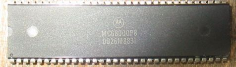

| 型名 | 原仕様 | その他 |
|---|---|---|
| SE | cpu 68000 8MHz  | KT7.1 RAM 4MB
HD 160MB *このSEについて |
| SE30 | cpu 68030 16MHz HDFD HD | KT7.1 RAM 16MB
HD 160MB *しましまっく現象と対策 |
| ColorClassic | cpu 68030 16MHz HDFD HD | OS7.6.1 RAM36MB
HD 1GB *LC575ロジックボード使用、VGA化 |
| IICi | cpu 68030 25MHz | KT7.1／NetBSD
*NetBSDのインストール |
| IICi | cpu 68030 25MHz | Quadra650改造
40MHz Wombat改造< *Quadra650改造 *Wombat改造 |
| IICi | cpu 68030 25MHz | Quadra650改造 40MHz Wombat改造 |
| IISi | cpu 68030 20MHz | *IISiのその後 |
| IICx | cpu 68030 16MHz | Centris650 25MHz に改造 *このIICXについて |
| IIFx | cpu 68030 40MHz | *IIFx |
| IIVi | cpu 68030 16MHz | *IIViをQuadra650に改造 |
| LCII | cpu 68030 16MHz | *LCII |
| LCIII | cpu 68030 25MHz | OS7.5.3 RAM 8MB
HD 1080MB *FPU-MC68882取り付け |
| LC475 | cpu 68LC040 25MHｚ | Sun SparkStation
IPXに収納 33MHz *SparkStation改造 |
| LC575 | cpu 68LC040 33MHｚ | OS7.6.1 |
| LC630 | cpu 68LC040 33MHｚ | OS7.6.1 |
| Centris610 | cpu 68LC040 20MHz | *Centris610 |
| Centris650 | cpu 68040 25MHz | *Centris650 |
| Qudra650 | cpu 68040 33MHz | OS7.6/NetBSD1.3.3 |
| Centris660AV | cpu 68040 25MHz | OS7.6.1 |
| Qudra800 | cpu 68040 33MHz | OS7.6.1 *Quadra800 |